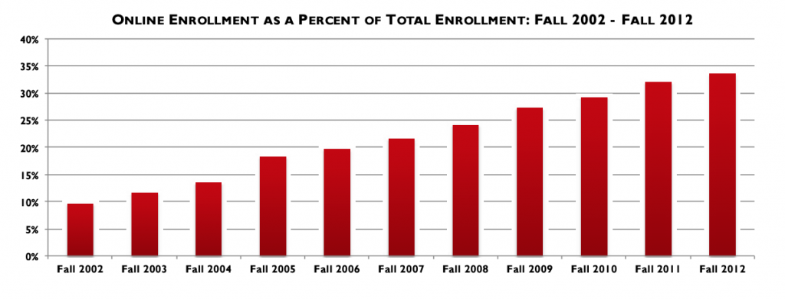

1.7 Da periferia ao centro: como a tecnologia está mudando a forma como ensinamos


Veremos no Capítulo 7, Seção 2 que a tecnologia tem desempenhado um papel importante no ensino desde tempos imemoriais, mas até recentemente permaneceu mais na periferia da educação. A tecnologia foi usada principalmente para apoiar o ensino regular em sala de aula, ou operou na forma de educação a distância, para uma minoria de estudantes ou em departamentos especializados (muitas vezes em educação continuada ou extensão).
No entanto, nos últimos dez a quinze anos, a tecnologia tem influenciado cada vez mais as atividades centrais de ensino das universidades e faculdades. Algumas das formas pelas quais a tecnologia está migrando da periferia para o centro podem ser vistas nas seguintes tendências.
1.7.1. Aprendizagem totalmente on-line
A aprendizagem on-line creditada nos últimos anos tornou-se uma atividade principal e central da maioria dos departamentos acadêmicos em universidades, faculdades e, em certa medida, até mesmo no ensino básico (K-12).
As matrículas em aprendizagem on-line cresceram entre 10 e 20% ao ano entre 2002 e 2012 nas instituições de ensino superior da América do Norte, em comparação com um crescimento de cerca de 2 a 3% ao ano nas matrículas presenciais (Allen e Seaman, 2014).



Apenas no California Community College System, há quase um milhão de matrículas em cursos on-line (Johnson e Mejia, 2014). Há agora pelo menos sete milhões de estudantes nos EUA fazendo pelo menos um curso totalmente on-line, quase 30% de todos os estudantes de ensino superior nos EUA; e 14% de todos os estudantes cursam apenas disciplinas a distância. A maioria dessas matrículas totalmente on-line (pouco mais de dois terços) está em instituições públicas nos EUA (as matrículas on-line em instituições com fins lucrativos despencaram após 2012 devido à regulamentação da era Obama). Ao mesmo tempo, o número de estudantes estudando em um campus nos EUA caiu em quase um milhão (931.317) entre 2012 e 2015 (Digital Learning Compass, 2017).
A situação no Canadá é um tanto similar. A maioria das instituições de ensino superior canadenses (83%) ofereceu cursos totalmente on-line para crédito em 2017. Cerca de 17% de todos os estudantes cursavam pelo menos uma disciplina on-line; as inscrições em cursos on-line totalizaram 1,3 milhão, representando 8% de todas as matrículas em disciplinas creditadas. Isso equivale, em um sistema com aproximadamente 70 universidades e 150 faculdades públicas, a quatro universidades adicionais de 27.000 estudantes e cinco faculdades adicionais de 10.000 estudantes. A aprendizagem on-line foi considerada muito ou extremamente importante para o futuro da instituição em mais de dois terços de todas as instituições (Bates et al., 2018).
Portanto, a aprendizagem totalmente on-line é agora um componente fundamental de muitos sistemas de ensino básico e de ensino superior.
1.7.2. Aprendizagem híbrida e blended
À medida que mais docentes se envolveram com a aprendizagem on-line, perceberam que muito do que tradicionalmente era feito em sala de aula pode ser feito com igual eficácia ou melhor on-line (um tema que será explorado mais detalhadamente no Capítulo 10, Seção 2). Como resultado, os docentes foram gradualmente introduzindo mais elementos de estudo on-line em seu ensino presencial. Assim, os sistemas de gestão de aprendizagem (LMS) podem ser usados para armazenar notas de aula em forma de slides ou PDFs, links para leituras on-line podem ser fornecidos, ou fóruns on-line para discussão podem ser criados. Dessa forma, a aprendizagem on-line está sendo gradualmente mesclada com o ensino presencial, sem alterar o modelo básico de ensino em sala de aula. Aqui, a aprendizagem on-line está sendo usada como um complemento ao ensino tradicional. Embora não haja definições padronizadas ou consensuais nessa área, usarei o termo 'aprendizagem blended' para esse uso da tecnologia.
Mais recentemente, porém, a captura de aulas (lecture capture) levou os docentes a perceber que, se a aula for gravada, os estudantes podem assisti-la em seu próprio tempo, e o tempo em sala de aula pode ser usado para sessões mais interativas. Esse modelo ficou conhecido como 'sala de aula invertida' (flipped classroom).
Um movimento ainda mais significativo, mas ainda em minoria das turmas, é a migração para a aprendizagem híbrida, em que parte — mas não todo — o tempo regular em sala de aula é substituída por atividades on-line. Isso às vezes leva a um redesign completo da experiência de aprendizagem dos estudantes.
Algumas instituições estão agora desenvolvendo planos para transferir uma parte substancial de seu ensino para modalidades mais blended ou flexíveis. Quase dois terços das instituições na pesquisa canadense de 2017 já tinham um plano para aprendizagem on-line ou estavam desenvolvendo um, e outros 30% relataram que não tinham um plano, mas precisavam de um. Por exemplo, em 2013 a Universidade de Ottawa desenvolveu um plano para ter pelo menos 20% de seus cursos em formato blended ou híbrido em cinco anos (University of Ottawa, 2013). A University of British Columbia tem um plano para redesenhar a maioria de suas grandes turmas de aulas expositivas do primeiro e segundo anos em turmas híbridas. Além disso, alguns docentes estão incorporando tecnologias emergentes, como simulações e jogos educacionais ou sérios, realidade aumentada e virtual, de formas que mudam fundamentalmente a experiência de aprendizagem. Todos esses são indícios da crescente importância da aprendizagem digital.
1.7.3. Aprendizagem aberta
Outro desenvolvimento cada vez mais importante vinculado à aprendizagem on-line é a migração para a educação 'aberta', que nos últimos 10 anos começou a impactar diretamente as instituições convencionais. O mais imediato são os livros didáticos abertos — como o que você está lendo agora. Os livros didáticos abertos são livros didáticos digitais que podem ser baixados em formato digital por estudantes (ou docentes) gratuitamente, economizando assim consideráveis quantias em livros didáticos. Por exemplo, no Canadá, as três províncias da Colúmbia Britânica, Alberta e Saskatchewan estão colaborando na produção e distribuição de livros didáticos abertos revisados por pares para as 40 áreas temáticas de maior matrícula em seus programas universitários e de faculdades comunitárias. Até 2018, quase todas as instituições de ensino superior da Colúmbia Britânica (90%) haviam adotado pelo menos um livro didático aberto (Bates et al., 2018).
Os Recursos Educacionais Abertos (REA) são outro desenvolvimento recente na educação aberta. São materiais educacionais digitais disponíveis gratuitamente na Internet que podem ser baixados por docentes (ou estudantes) sem custo e, se necessário, adaptados ou modificados, sob uma licença Creative Commons que oferece proteções aos criadores do material. Provavelmente a fonte mais conhecida de REA é o projeto OpenCourseWare do Massachusetts Institute of Technology. Com a permissão de professores individuais, o MIT disponibilizou gratuitamente pela Internet videoaulas gravadas com captura de aula, bem como materiais de apoio, como slides.
As implicações dos desenvolvimentos na aprendizagem aberta serão discutidas com mais detalhes no Capítulo 11.
1.7.4. MOOCs
Um dos principais desenvolvimentos na aprendizagem on-line foi o rápido crescimento dos Cursos On-line Abertos e Massivos (MOOCs — Massive Open Online Courses). Em 2008, a Universidade de Manitoba, no Canadá, ofereceu o primeiro MOOC com pouco mais de 2.000 matrículas, que vinculava apresentações em webinar e/ou posts em blogs por especialistas a blogs e tweets dos participantes. Os cursos eram abertos a qualquer pessoa e não tinham avaliação formal. Em 2012, dois professores da Universidade Stanford lançaram um MOOC baseado em captura de aulas sobre inteligência artificial, atraindo mais de 100.000 estudantes, e desde então os MOOCs se expandiram rapidamente ao redor do mundo.
Embora o formato dos MOOCs possa variar, em geral eles têm as seguintes características:
- abertos a qualquer pessoa para se inscrever e com inscrição simples (apenas um endereço de e-mail)
- números muito grandes de participantes (de 1.000 a 100.000)
- acesso gratuito a videoaulas gravadas, frequentemente das universidades mais conceituadas dos EUA (Harvard, MIT e Stanford em particular).
- avaliação por computador, geralmente usando questões de múltipla escolha e feedback imediato, combinados às vezes com avaliação por pares
- ampla variação no comprometimento dos aprendizes: até 50% nunca fazem mais do que se registrar, 25% nunca fazem mais do que a primeira tarefa, menos de 10% concluem a avaliação final.
No entanto, os MOOCs são apenas o exemplo mais recente da rápida evolução da tecnologia, do entusiasmo excessivo dos primeiros adotantes e da necessidade de uma análise cuidadosa dos pontos fortes e fracos das novas tecnologias para o ensino. Eles estão evoluindo ao longo do tempo e começando a encontrar um nicho mais limitado, mas ainda importante, no mercado de ensino superior. Os MOOCs serão discutidos mais detalhadamente no Capítulo 5.
1.7.5 Gerenciando o cenário em transformação da educação
Esses rápidos desenvolvimentos nas tecnologias educacionais significam que os docentes precisam de um framework sólido para avaliar o valor das diferentes tecnologias — novas ou existentes — e para decidir como ou quando essas tecnologias fazem sentido para eles e seus estudantes. A aprendizagem blended e on-line, as mídias sociais e a aprendizagem aberta são todos desenvolvimentos essenciais para um ensino eficaz na era digital.
No entanto, esses desenvolvimentos tecnológicos emergentes precisam ser orientados para as necessidades em mudança dos aprendizes em uma sociedade digital, o que significa também analisar diferentes formas de ensinar e garantir que esses métodos de ensino e as escolhas de tecnologia estejam plenamente alinhados com as necessidades dos aprendizes na era digital.
Referências
Allen, I. and Seaman, J. (2014) Grade Change: Tracking Online Learning in the United States Wellesley MA: Babson College/Sloan Foundation
Bates, T. et al. (2018) Tracking Online and Distance Education in Canadian Universities and Colleges 2018 Halifax: Canadian Digital Learning Research Association
Digital Learning Compass (2017) Distance Education Enrolment Report 2017 Wellesley MA
Johnson, H. and Mejia, M. (2014) Online learning and student outcomes in California's community colleges San Francisco CA: Public Policy Institute of California
University of Ottawa (2013) Report of the e-Learning Working Group Ottawa ON: University of Ottawa: ver também Report on the Blended Learning Initiative (2016), que relata o progresso na implementação do plano
Atividade 1.7 As consequências da mudança
- Nos últimos anos, você migrou para a aprendizagem blended ou on-line ou usou novas tecnologias no seu ensino? Se sim, qual foi o motivo?
- Se não, o que o impediu de tentar uma nova abordagem com tecnologia?
- Se você começou a usar tecnologia no seu ensino, quais foram as principais dificuldades encontradas? Você recebeu ajuda suficiente de colegas ou da instituição?
- Você mudou seus objetivos acadêmicos ou tentou alcançar os mesmos resultados de aprendizagem do ensino totalmente presencial?
- Houve consequências não intencionais ou inesperadas ao migrar para um uso maior de tecnologia no seu ensino?
Esta atividade não tem feedback.